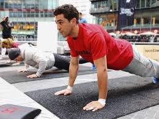
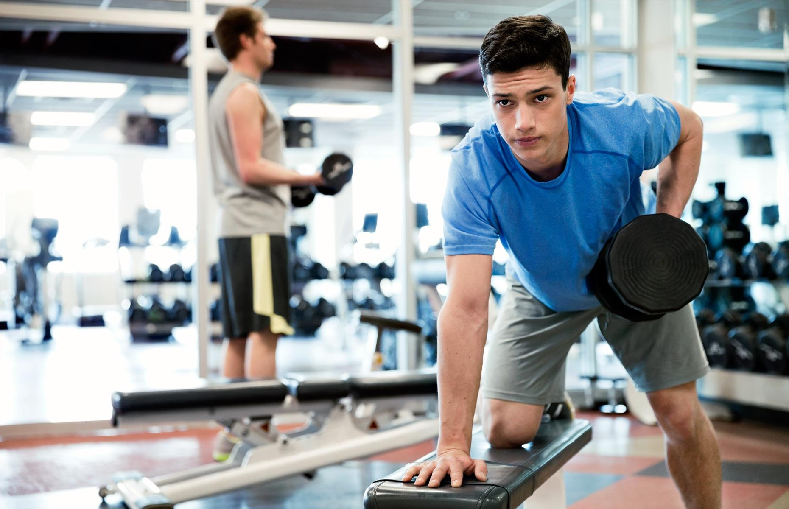

Why you should exercise more often
You keep your skin clean. You condition your hair. You're eating right. You're doing all you can to look and feel great. But are you missing out on an important part of a healthier lifestyle?
No matter what your age or shape, you should exercise daily. Not only does exercise tone your body so you can wear your favorite jeans, it strengthens your muscles, keeps your bones strong, and improves your skin. And there are more benefits of exercise -- increased relaxation, better sleep and mood, strong immune function, and more. Let's look at some of the incredible benefits of exercise then talk about how you can get started.
Exercise and Your Weight Because exercise helps use up oxygen, it causes your body to burn stored fat and helps you maintain a normal weight. For instance, if you walk 4 miles a day four times a week, you can burn about 1,600 calories or nearly half a pound a week. If you don't change your diet at all and keep walking the same distance over six months, you'll lose 12 pounds. Walk the same distance for a year and you'll drop 24 pounds.
The neat thing about exercise is you don't have to do it all at one time. After all, not many teens have time to walk 4 miles after school. But you can do 4 miles in short bursts throughout your day. Here's an idea of how to work that much exercise into your daily routine:
Take a 1-mile walk on a treadmill before school. Then, take a 1-mile walk around the track during school lunch period. Take a 1-mile walk after school with friends or the family dog. Take a 1-mile walk on the treadmill while watching your favorite show before dinner. If you stay with the walking program, you'll see benefits with:
- Weight loss
- Muscle strengthening and definition
- Stronger bones
- A lower heart rate
- Better mood
- An improved complexion
Most people know that exercise keeps muscles strong. But did you know that strong muscles burn more calories? Muscle mass is metabolically active tissue. In other words, the more muscle mass you have, the more calories you burn even when you're not working out.
Studies estimate that for each pound of muscle you add to your body, you will burn an additional 35-50 calories per day. So an extra 5 pounds of muscle will burn about 175-250 calories a day -- or an extra pound of fat every 14-20 days.
Research shows that regular exercise reduces symptoms of moderate depression and enhances psychological fitness. Exercise can even produce changes in certain chemical levels in the body, which can have an effect on the psychological state.
Endorphins are hormones in the brain associated with a happy, positive feeling. A low level of endorphins is associated with depression. During exercise, plasma levels of this substance increase. This may help to ease symptoms of depression. A recent National Health and Nutrition survey found that physically active people were half as likely to be depressed.
Exercise also boosts the neurotransmitter serotonin in the brain. Neurotransmitters are chemicals that send specific messages from one brain cell to another. Though only a small percentage of all serotonin is located in the brain, this neurotransmitter is thought to play a key role in keeping your mood calm.
Regular exercise appears to help jump-start the immune system, thus helping to reduce the number of colds, flu, and other viruses.
Keep in mind, however, that too much exercise can have the opposite effect; it can weaken your immunity to colds and other viruses and can lead to injury. Joint or muscle pain may be a sign. If you're doing intense workouts every day, consider alternating them with walking and upper-body lifting.
The more intense the training session, the more heat your body will produce. Before beginning exercise, drink water to help the body compensate for sweating. You can drink more water during exercise if you're thirsty.
The benefits of daily exercise are incredible, and they are free! Start a daily exercise regimen today, and enjoy all the proven "extras" that come with moving around more.